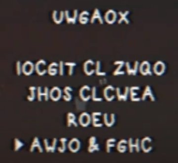
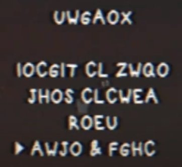

Recapitulación de la información sobre Crow 64
Si alguno de los videos no está disponible, podrás encontrarlo aquí.
Para seguir con la historia como avanza, porfavor sigue alguna de las redes sociales
Da click aquí para un resumen de todo el documento //(Se recomienda mucho leer esto, ya que explica la historia completa de forma rápida y completa).
Este documento fue creado y es actualizado por miembros de la comunidad de Catastrophe Crow! para estar al día con este juego de realidad alternativa en el que se centra este epónimo juego. Un juego de realidad alternativa o ARG por sus siglas en inglés, es una historia que aparenta ser real y depende de la interacción con la audiencia, a veces incluso interactuando con el mundo real. “Catastrophe Crow!”, o “Crow 64” es un juego ficticio desarrollado por Manfred Lorenz y Opus Interactive para la Nintendo 64. El juego tuvo un desarrollo pesado y complejo que terminó con la compañía y que causó que el juego nunca viera la luz del día, y a su creador Manfred Lorenz se le daba por muerto. La investigación de Adam Butcher y su video “WHAT HAPPENED TO CROW 64?” (“¿Qué le pasó a Crow 64?”) dio atención al juego, y esta comunidad se ha formado a base de documentar las peculiaridades y eventos alrededor del juego. Para aclarar dudas, “Catastrophe Crow!”, Manfred Lorenz, y los eventos que los rodean son completamente ficticios, pero este documento habla de estos como si fueran reales por pura conveniencia. Adam y Luke Butcher son personas reales los cuales han hecho varias otras cosas aparte de “Catastrophe Crow!”. Mientras hay elementos en los que tenemos que interactuar para progresar en el juego, por favor tengan cuidado cuando interactúen. No queremos molestar a nadie que no esté relacionado con este ARG. Hay una compañía real llamada Opus Interactive, pero no tiene ninguna relación con la Opus Interactive de “Catastrophe Crow!”.
Este documento busca lo siguiente:
Toda la información que sea especulativa va en magenta, pero por la mayor parte este
documento busca ser exacto y concreto. Si estás buscando algo más concreto, mira el índice de abajo. Puedes usar para navegar fácilmente por el documento y buscar cosas en las que estés interesado. También puedes usar el cuadro que está a la izquierda del documento que se ve como una lista para acceder a temas fácilmente. No dejes que el tamaño del documento te intimide, la mayor parte de contenidos son imágenes más que texto. Si quieres contribuir al documento solo contacta a los editores del documento en el servidor de Discord, el cual está arriba en redes sociales.
Videos conocidos (a partir de 15/11/20) [Lista de reproducción]
Kaleb, un entusiasta de videojuegos
Un ex empleado de Opus Interactive
Fred Daves, un YouTuber jugando Catastrophe Crow!
"Como si algo me estuviera siguiendo"
"No ha venido a casa en varios días"
El Padre Cuervo camina por ahí
Segundo encuentro con el Padre Cuervo
El protagonista vuelve a entrar al mapa principal
El protagonista vuelve a entrar al edificio de "Work"
El Sr. Cuervo se cae en las escaleras
Computador de código morse / Lenguaje Crow #2
Sonidos del teclado #1 / Leguaje Crow #3
Catastrophe Crow! – Underground Level
catastrophe crow n64 playthrough
Código del control / Leguaje Crow #6
Let's Play Catastrophe Crow! 64 – Ep1
Let's Play Catastrophe Crow! 64 – Ep2
Catastrophe Crow!: N64 Gameplay
Cartucho que parece una lápida
El Sr. Cuervo vuela fuera del nivel
“Catastrophe Crow!” Development Documents
° (Diciembre 5)
Binario del oso de peluche
Alpha Waves Continuum 4 Color CGA Graphics First Playthrough (3D Platformers NZ)
Tonic Trouble – N64 Difficult Lava Level (Childhood Memories 64)
chameleon twist 2 level 1 (N64 Long Lost Lore)
Let's Play Doraemon 64 – First Boss (90sRetroGamingFRed)
Gex 64: Toon Land (N64ExcavationMan)
Rocket Robot On Wheels Opening Gameplay (Ultra 64 Forever)
Documentos de Catastrophe Crow
Transcripciones de los escaneos de páginas
Planet 64 (1:05 en WHAT HAPPENED TO CROW 64?)
N64 Future Look (2:00 en WHAT HAPPENED TO CROW 64?)
Una audiencia con... Manfred Lorenz (1:38 en WHAT HAPPENED TO CROW 64?)
El puente de los peces voladores
Schwarzwald/Black Forest (Bosque negro)
Las islas Helgoland y Wattensee
¿Qué significaba la nota de Manfred?
¿Qué es el sistema "Eternal Revival"?
El sr. Cuervo se cayó de las escaleras
La especulativa línea del tiempo de BMB
El teléfono representa la ausencia de Manfred
Manfred Lorenz está atrapado dentro del juego
Créditos
Traducción a español
Editores del documento
Fuentes de investigación adicional
Agradecimientos especiales
Un decodificador online se encuentra aquí.
Algo del texto que aparece en los videos parece sin sentido, la mayor parte de veces es ya que está en “Idioma Crow” (lenguaje cuervo).
catastrophe crow n64 playthrough por N64 Long Lost Lore incluye un menú de pausa sin (at 0:30) y con texto sin sentido (at 3:00), gracias a esto pudimos crear un mapa del alfabeto normal y el alfabeto en Crow. Las letras que no estaban en este menú fueron descubiertas traduciendo palabras de ingles a crow y luego llenando los espacios en blanco.
Mapa codificado (arriba es encriptado, abajo es texto normal):
A B C D E F G H I J K L M N O P Q R S T U V W X Y Z
S F T Z L Q U I R V Y O J C E X M H W N P B A D K G
Por ejemplo, si empiezas con la palabra “password”, puedes reemplazar cada letra con la letra de la fila de arriba como se ve en la tabla anterior.
El resultado es “UWAASLIX”. Esto puede ser decodificado de vuelta a “password” reemplazando cada letra de la fila de arriba por la correspondiente de la fila de abajo, o en otras palabras haciendo el mismo proceso en reversa.
Interesantemente, “Thea” se traduce a “Crow”, “Crow” se traduce a “Nils”, y “Nils” se traduce a Thea en Lenguaje Crow.
Un fácil convertidor online se encuentra aquí.
En caso de encontrar una serie de dígitos, es probablemente para que sea usado para ser decodificado en otro fragmento de texto. Una serie así puede ser encontrada en WHAT HAPPENED TO CROW 64? por Adam Butcher (en el minuto 4:22). Esta tabla aparece en Forest Level por N64ExcavationMan (en el minuto 3:38).
Las serie de dígitos son usadas para los valores del eje Y mientras que los caracteres de una clave (hasta ahora nombres de personas) son usados para el eje X. Los nombres que han mostrado funcionar son Nils, Thea, y Crow.
Ejemplo:
Digitos: 30781354841
Nombre: NILS
Para la primera letra, toma la letra de la fila 3 columna N, luego fila 0 columna I, etc. En la mayor parte de casos el nombre será mucho más corto que los dígitos, En ese caso solo continua repitiendolo. El nombre entero para el código de arriba se puede interpretar como NILSNILSNIL.
Después de descifrarlo nos da NILSIMALIVE. (NILS ESTOY VIVO).
En Catastrophe Crow! – Underground Level por Childhood Memories 64 a partir de 0:49, el Cuervo pisa varias teclas de un teclado. Cada sonido corresponde a una letra. Usando estos sonidos, un mapa de sonidos como el de Video puede ser usado para hacer un mensaje a Crow y luego a inglés. Una consola con todos los sonidos está disponible aquí.
La primera letra del nombre de un sonido usualmente corresponde a este. Por ejemplo B aplica a Bell (Campana en inglés), P para Phone (Teléfono en inglés), etc.
Notas arriba, letras abajo
C3 | C#3 | D3 | D#3 | E3 | F3 | F#3 | G3 | G#3 | A3 | A#3 | B3 | C4 | C#4 | D4 | D#4 | E4 | F4 | F#4 | G4 | G#4 | A4 | A#4 | B4 | C5 | C#5 |
A | B | C | D | E | F | G | H | I | J | K | L | M | N | O | P | Q | R | S | T | U | V | W | X | Y | Z |
Mira End Credits Soundtrack (1995) section para más detalles sobre cómo esto fue encontrado. Como visto arriba, varias notas corresponden a letras, permitiendo mensajes ocultos en melodías.
Se pronuncia [man.frɛt lɔ.rɛnts] (maan-fret lau-rents)
El creador de Catastrophe Crow y Ocean Quest y dueño de la ahora extinta Opus Interactive. Conocido perfeccionista, y ganador de 2 premios Golden Joystick y un premio AIAS al salón de la fama. En las últimas fases del desarrollo de Catastrophe Crow, su vida familiar fue completamente destruida, al punto que dejó de ver a su familia por meses. En los últimos meses de Opus él fue el único y último desarrollador en toda la compañía ya que por el costo todos los empleados fueron despedidos.
Dado por muerto después de su desaparición en Cuxhaven. Le dejó una nota extraña a su esposa que decía, aparte de varias cosas, que finalmente había llegado a casa. Los correos con “ML” nos dicen que este sigue vivo y es consciente de la investigación sobre Catastrophe Crow. Los nombre de los canales una vez combinados nos da su nombre, y ML confirma que él creó los canales. Retrogamingcollectibles, el vendedor de eBay el cual le vendió a Adam su cartucho, también es Manfred, y quería venderle el juego a Nils, pero Adam lo compró.
Evidencia que nos dice que M L es Manfred Lorenz:
Se pronuncia [maː.ta lɔ.rɛnts] (mah-tah lau-rents)
Se fue de Alemania antes de la desaparición de Manfred, a ella está dirigida la nota de Manfred. Se desconoce dónde está actualmente.
Se pronuncia [tʰɛa lɔ.rɛnts] (teh-ah lau-rents)
Dibujó el dibujo que inspiró a la creación del juego. Posiblemente muerta.
Se pronuncia [niːls lɔ.rɛnts] (neels lau-rents)
Los correos de ML dan a entender que Nils sigue vivo, o que si fue incapacitado, este sigue en un estado en el que sigue vivo. Se desconoce dónde está actualmente. Jamás es mencionado en WHAT HAPPENED TO CROW 64?.
Un youtuber, escritor, y director quien ayudó a crear WHAT HAPPENED TO CROW 64?, el video que inició todo. A pesar de su investigación y rol en Catastrophe Crow, el no ha hecho ningún comunicado publicado sobre el asunto.
Hermano de Adam y co-creador de WHAT HAPPENED TO CROW 64?. Doctor en física.
Se pronuncia [ʊl.ʁɪç adɐ.man] (ul-rish aada-maan)
Un ex-desarrollador de Opus Interactive y dueño de una cuenta de Twitter. Posee documentación sobre el desarrollo del juego y una antigua estación de trabajo que usó para subir la “rom” del juego. Desde entonces ha permanecido en silencio, sin siquiera responder en Twitter por más de un mes.
El protagonista del juego. Tiene las habilidades típicas de un protagonista de plataformero, como agarrarse de esquinas, saltar contra paredes, y hacer un salto triple con sus alas. Por su herida, no puede volar, y es por eso que su ala izquierda tiene un vendaje.
Se cree que este representa a Thea Lorenz.
Se le llama “Sr. Cuervo” en el artículo de Planet 64, pero simplemente se le llama “Cuervo” en el artículo de N64 Future Look. El primer artículo fue de 1997 y el segundo es de 1999, es posible que su nombre haya sido cambiado entre estos 2 artículos. Esto podría significar que Manfred empezó a ver al Sr. Cuervo como Thea. Se le llama “Sr. Cuervo” y se le refiere como hombre por comodidad. En el dibujo de Thea se lo llama “Katastrophe Krähe” (sic), que es “Catastrophe Crow” (“Cuervo Catástrofe”) en Alemán.
Evidencia que nos dice que el Sr. Cuervo representa a Thea:
Casi ciertamente un personaje diferente al Sr. Cuervo. El Hermano Cuervo aparece por primera vez en Let’s Play Catastrophe Crow! Ep. 1 y Forest Level después de que el Sr. Cuervo interactúa con el espejo en el Nivel del bosque. Al contrario del Sr. Cuervo, este no tiene un vendaje en su ala derecha, tiene ojos verdes, es más pequeño, este puede volar con ningun tipo de restriccion vista aun en ningun video de la serie, lo que le permite llegar a areas que el Sr. Cuervo no puede. Se cree que este representa a Nils.
Evidencia que nos dice que el Cuervo Sin vendaje es Nils:
Un cuervo más adulto con lentes, se cree que es el padre del Sr. Cuervo. No tiene un nombre oficial. Se cree que este representa a Manfred. Es jugable en el minuto 11:26 en WHAT HAPPENED TO CROW 64 hasta el final del video donde el Sr. Cuervo cae por las escaleras. Se lo ve cometer suicidio antes en el video.
Evidencia a favor de la teoría que dice que Manfred=Padre Cuervo:
Lo que parece ser un cuervo altamente herido, aparece al final de WHAT HAPPENED TO CROW 64? Posiblemente representa a Thea Lorenz, y quizás es el mismo personaje que el Sr. Cuervo, ya que esto solo aparece una vez que el Padre Cuervo es jugable. La habitación en la que este está contiene el dibujo original de Thea que inspiró el juego. Cuervo Muerto es el cuervo que se parece más a un cuervo real, sin contar el hecho que le falta la cabeza. ¿Quizás la persona que representa se lastimó la cabeza?
Varios NPCs (Non-Playable-Characters, en español “Personajes No Jugables”) en Catastrophe Crow. La mayoría no tienen nombre oficiales, así que se le han dado apodos por mera conveniencia, listados de izquierda a derecha.
Espantapájaros (quien apareció por primera vez en el minuto 7:50 en WHAT HAPPENED TO CROW 64?) y Gateador aparecen después de que el Sr. Cuervo se cae de las escaleras y ambos se le acercan. Las bolsas que cubren sus cabezas se llaman “bolsas de dinero” en el Proyecto de Unity. La foto familiar en Catastrophe Crow N64 apunta a que estos representan a Marta y a Nils respectivamente. El Gateador se parece al Monstruo del espejo y al Espantapájaros.
Los monjes aparecen en el artículo de Planet 64, en el minuto 2:09 en WHAT HAPPENED TO CROW 64?, y por unos segundos en el minuto 0:45 en Video. Aparecen en una forma tanto grande (como 5 veces más grande que el Sr. Cuervo) como pequeña (como del tamaño del Sr. Cuervo).
Los peces voladores aparecen en WHAT HAPPENED TO CROW 64? al minuto 2:08 y en el minuto 1:58 de Let's Play Catastrophe Crow! 64 – Ep1. En contraste a los peces reales, los cuales tienen aletas verticales, los peces voladores tienen aletas horizontales.
Los árboles aparecen en los documentos de desarrollo de Catastrophe Crow (“Catastrophe Crow!” Development Documents). Su ojo se llama “ojo malvado” en el Proyecto de Unity.
El antagonista original del juego. Este no ha aparecido en ningún video o artículo. La única referencia a él existe en los archivos del proyecto de Unity, donde se encuentran objetos llamados “Catanic Circles” (“Círculos Gatánicos”, juego de palabras entre “Gato” y “Satánico”).
Aparecen brevemente en WHAT HAPPENED TO CROW 64 y en ° (Nov 24). Considerando la escena CREDITS (“créditos”) del proyecto de Unity (que deletrea “lo siento, todos ustedes”), se cree que representan a los empleados de Opus.
Aparece más prominentemente en Let's Play Catastrophe Crow! 64 – Ep2, en ° (Nov 24), y en ° (Dic 5), donde da un código. En el proyecto de Unity se llama “jugador”, lo que sugiere que representa al jugador, sean los jugadores de Catastrophe Crow dentro del universo del juego, a los participantes mismos del ARG, o a individuos específicos como Thea o Nils, o alguna combinación de todos ellos. El hecho de que sea reemplazado fugazmente por Hermano Cuervo y por un Peón en ° (Nov 24) hace pensar que el Oso de Peluche representa más de una cosa. Considerando que aparece más de una vez como utilería, puede tener otro significado.
Nota: ML no ha respondido en meses. Dejen de enviar correos. Dejen de preguntar al respecto. Lo que sea que estén pensando ya se hizo más de una vez. No intenten extraer información privada de la cuenta o incluso hackearla. Esta actividad irresponsable es el motivo por el que no podemos tener cosas lindas.
Estos canales tenían correos electrónicos en su sección de Más Información.
Una pista codificada en Crow y Vigenère en otro video decía “Junten los e-mails.” Intentamos varias combinaciones, pero la única que ha resultado exitosa es [redactado]@gmail.com. Alrededor de las 8 AM UTC el 17 de Octubre, el correo empezó a responder con preguntas como “¿Quién eres?”. Los correos venían de un usuario que se refería a sí mismo como M L. Después de responder con el nombre de “Nils,” el usuario Medley (Mikel) recibió la siguiente respuesta (traducción más abajo):
Después de responder, aparentemente M L quiere saber cuándo es el cumpleaños de Nils y un lugar al que iban de vacaciones cada año. Hasta ahora sabemos que el 5 de Noviembre no es la fecha. Esta fecha fue propuesta basada en una de las fechas en el cartucho de Adam. Lugares como Cuxhaven y Bispingen/Wilseder Berg también son incorrectos. La posibilidad de que sea el bosque Vallombrosa en Italia no ha sido confirmada ni desconfirmada. Por las iniciales M L creemos que es Manfred Lorenz, y esto indica que Manfred está buscando encontrarse con Nils por una razón desconocida. Y también creó las cuentas usadas para encontrar su email y la cuenta de ebay.
Aquí están las transcripciones de todos los emails hasta ahora, y también los que hemos enviado nosotros. Los intentos que no recibieron respuesta no están documentados dado que sin respuesta no hay información de ML para agregar.
Se recibieron 3 variaciones de este correo. La primera es del usuario Medley (Mikel).
ML: Nils… ¿de verdad eres tú?
Respondió sí a ML.
ML: Mi querido hijo,
Después de todos estos años tengo tanto que decir,
Tu cumpleaños no está tan lejos. ¿Me gustaría que nos conocieramos el día después? En el lugar al que íbamos todos los años de vacaciones?
Estaré ahí.
M
Una respuesta se mandó diciendo que el cumpleaños era el 5 de Noviembre, y Cuxhaven y Bispingen/Wilseder Berg como los lugares.
ML: Me gustaría creerte, pero ya no puedo dar ese salto.
Ahora entiendo que más personas de las que quería han descubierto esto. Solo puedo esperar que el verdadero destinatario sea uno de ellos
Estaré esperando
El segundo es del usuario Sr. Esteban.
18 de Octubre 8:52 AM CST
N: Tengo tantas preguntas...
Antes que todo..
¿En verdad eres tú?
18 de Octubre 9:48 AM CST
ML: Mi querido hijo, quiero creer que eres tu,
Habiendo llegado tan lejos, debes entenderme un poco. Pero hay mucho que discutir.
¿Me gustaría que nos encontrásemos? pensaba el día después de tu cumpleaños, en el lugar al que íbamos de vacaciones todos los años.
Estaré esperando.
M
18 de Octubre 12:34 PM CST
N: ¡También quiero verte!
Ha pasado tanto tiempo… era muy joven cuando te vi por última vez. Muchos recuerdos reprimidos. ¿Podría ser en ese bosque en Italia?
18 de Octubre 3:09 PM CST
ML: Lo siento. Quiero tomar un salto de fe...pero el abismo crece cada vez más.
Hay demasiados ojos curiosos, necesito pruebas de que eres quien dices ser,
No hay manera de que se te haya olvidado el día de tu cumpleaños.
M
Otra fecha fue enviada el 5 de Noviembre.
ML: Otro impostor.
Solo puedo esperar que él desee acordarse de mí. Y que uno entre esos ojos curiosos sea él.
Hasta entonces, estaré esperando.
La tercera fue enviada por el usuario 7k. Esta fue mandada de una cuenta con el nombre de Nils L. y se intentó hacerle preguntas preventivas a ML para obtener información adicional.
18 de Octubre 8:29 PM
Nils L: Siento que estoy perdiendo la cabeza. ¿Esto es real? ¿Estás intentando contactarme?
19 de Octubre 6:46 AM
M L: ¿En verdad eres?
¿Estás allá afuera, leyendo esto de alguna manera?
¿O has escogido no acordarte de mí?
19 de Octubre 1:37 PM
Nils L: Bueno, mi nombre es Nils Lorenz, nací en Alemania donde viví cuando era muy joven, y mi padre fue un desarrollador de videojuegos llamado Manfred, e incluso recuerdo bien el personaje del Cuervo, pero mi padre murió cuando era muy joven. Al menos eso es lo que mi madre me dijo. He estado viendo estos videos de un juego extremadamente familiar, con esos extraños mensajes que parecen estar dirigidos a mí, pero no sé qué pensar de ello. No se como sentirme de esta situación y no se si puedo confiar en ti. Siento que estoy soñando. ¿Habrá algo que puedas hacer para hacerme recordar? ¿Hay algo que me puedas decir para confirmarme que eres tú? algo de mi infancia. ¿Adonde fue mi hermana a estudiar? ¿Adonde nos íbamos de vacaciones? ¿Cómo se veía nuestra casa?
19 de Octubre
ML: Hablas como él, por lo menos como yo pienso que él hablaría. Con preguntas dolorosas de responder.
Pero los impostores se multiplican, y siento que no puedo tomar otro paso.
Todo lo que puedo hacer es esperar. Quizás un poco más.
20 de Octubre 10:49
Nils L: Supongo que es entendible, pero sabe que estoy siendo honesto. Esta situación me está royendo la mente, y he tenido problemas para entender cómo lidiar con todo esto. Quisiera respuestas. Pero si te sientes poco seguro lo entiendo, ya que me siento de la misma manera. Toma tanto tiempo como necesites. Estaré ahí. Esperando.
21 de Octubre
M L: Nos veo a ambos parados del lado opuesto del abismo. Ni vivos ni muertos. Pero la brecha cada vez se hace más ancha.
Hemos esperado demasiado tiempo.
Esa es la crueldad
Enviado por ParadoxFactor. Esto fue hecho para determinar si ML era Manfred o Marta
17 de Octubre 4:48 PM PST
ML: ¿Quién eres?
18 de Octubre 1:31 PST
Marta: Soy Marta.
18 de Octubre 12:58 AM PST
ML: Lo dudo.
18 de Octubre 9:24 PST
Marta: Soy yo. vi el video en línea y tenía que comunicarme contigo.
18 de Octubre 2:22 AM PST
ML: Mi duda se mantiene. Ella jamás resolvió nada.
18 de Octubre 11:09 PST
Marta: Tienes razón. Nils lo resolvió pero no quería mandar un mensaje. Así que yo lo mande en su lugar.
18 de Octubre 7:34 AM PST
ML: Eso es posible... pero no puede haber un intermediario.
Incluso después de tantos años, aún no entenderias.
Enviado por Vicky. Mensaje inicial mencionaba que estaba perdido
Lost Soul: ¿Qué estás intentando decirme?
ML: ¿A qué te refieres?
Enviado por 7K. Esto se mandó para ver como ML reaccionaria a una persona que no fuera parte de la familia de los Lorenz
K: Hola, mi nombre es Kaleb, crecí jugando mi género favorito de juegos el cual es los plataformeros en 3D y todavía tienen un lugar especial en mi corazón hasta el día de hoy. Siempre estoy buscando por un plataformero clásico que no he jugado aún, así que cuando un juego del cual nunca había escuchado empezó a aparecer en mis recomendaciones instantáneamente tomó mi atención y me dejó intrigado el hecho de que los videos tienen mensajes ocultos dentro de ellos. Quizás hayas visto alguno de mis comentarios en algunos de los videos resolviendo los acertijos. Ahora me doy cuenta que mientras estos videos son públicos, estos mensajes no están hechos para todos. Aun así, estoy muy conmovido por tu historia y de lo que puedo entender de ella. Así que si hay algo que pueda hacer, por favor déjamelo saber.
ML: Kaleb,
Quizás en otra vida hubieramos sido amigos
Pero esto se mantiene un asunto privado. Tu ayuda no me sirve de nada.
M
K: Fan art
Enviado por Rainbow
18 de Octubre 1:06 AM PST
ML: ¿Quién eres?
18 de Octubre 10:01 AM PST
Employee: uno de los ex empleados de Opus Interactive.
18 de Octubre 1:12 PM PST
ML: Entonces todo lo que puedo decir es lo siento.
Enviando por Flamsy para aparentar ser el dueño del canal de YouTube 90sRetroGamingFRed
Fred: Hey, he escuchado que eres el creador de Catastrophe Crow! 64. Estoy jugándolo en mi canal, ¡me la estoy pasando de maravilla!
Fred: Hey… ¿podría preguntarte un par de preguntas? El juego está actuando un poco… raro.
ML: “Fred”
Lo que haya creado ya no lo puedo controlar.
Sent by user Sir Dibs. He sent in as his own account not posing as anyone else. The title of the email was Crow64
Sir Dibs: A través de otros he escuchado sobre tu objetivo de contactarte con tu hijo Nils.
Como padre, te comprendo y quiero ayudarte a cumplirlo. Me temo que tu intento de encontrarte con él no haya funcionado.
¿Hay algo que me puedas decir de Nils que me ayude a localizarlo para darle tu mensaje?
Me disculpo por esta invasión a tu privacidad pero tu mensaje parece urgente y varios de nosotros estamos preocupados.
ML: Ha habido un grave error. El juego que mencionas nunca salió a la venta. No está hecho para ti.
Enviado por prlennox. Este es el nombre de unos de los canales de Youtube con videos de Catastrophe Crow 64.
N64LLL: Hola, soy "N64 Long Lost Lore"! He estado jugando uno de tus juegos recientemente (Catastrophe Crow) en mi canal ¡y ha sido muy divertido! Me recuerda a otros plataformeros, pero es más grande y mejor que varios otros. He estado investigando de la compañía a la que dirigiste y con la que trabajaste en el juego (Opus Interactive) y encontré otro juego en el que trabajaste, "Ocean Quest". Otro canal como el mío ha estado subiendo música del juego. Tengo curiosidad si tienes más información en este, ya que estoy realmente fascinado por Catastrophe Crow. Así que si no te es una molestia, ¿Podrías darme algunos detalles sobre este? ¡Gracias!
ML: Y “Lore”
Otra creación trabajando por sí sola
N64LLL: Alguien recientemente estaba vendiendo un cartucho de desarrollo de Catastrophe Crow! en ebay.com hace 2 semanas. El cartucho tenía una etiqueta con varias fechas, y tenía "CROW" escrito con un marcador en arriba de la etiqueta. Iba a comprarlo pero alguien lo compró antes que yo, justo después que había descubierto la página de Ebay, para ser exacto. Pero aquí está una foto del artículo antes de que lo compraran.
Una captura de pantalla de la subasta de eBay del documental fue incluida.
Tienes alguna información de quién lo compró, o ¿quién es el vendedor? ¿Alguna información del cartucho en sí? Si es así, ¡por favor dame esa información! ¡Gracias!
ML: Así que nunca lo recibió...
Fue hace tanto tiempo. Perdido hace tanto.
19 de Octubre
Mr Quartz enviado por SirDibs. Was sent to see the reaction if offered help in locating Nils.
Mr. Q: He escuchado de tu objetivo de encontrarte con tu hijo Nils.
Como padre, entiendo tu objetivo y quiero ayudarte. Me temo que tu intento de contactarlo ha fallado.
¿Hay algo que me puedas decir de Nils que me ayude a localizarlo y a darle tu mensaje?
Siento mucho esta invasión a tu privacidad pero por la urgencia de su mensaje estamos preocupados.
19 de Octubre
ML: Señor Quartz -
Si él no me recuerda, no deseo ser recordado.
Me mantendré aquí.
MM enviado por Medley (Mikel)
MM: Querido M L,
Estamos intentando hacer que Nils se ponga en contacto contigo, ¿Acaso tiene toda la información que él necesita para poder contactar contigo? ¿O necesita más tiempo para poder probarse a sí mismo?
Gracias,
MM
ML: Desearía que tu ayuda me sirviera de algo. Si tan solo fuera tan sencillo.
Esa es la crueldad de cosas sin terminar
Desde el 21 de Octubre hasta el 5 de Diciembre, M L no ha respondido a ningún correo, a pesar de repetidos intentos. Después de que un usuario de Discord intentara acceder a la cuenta usando el mecanismo de “Olvidé mi contraseña”, la cuenta de mail fue removida de este documento.
El 5 de diciembre, una oleada de correos fue enviada justo después de que el proyecto de Unity de Ulrich fuera desencriptado. Todos los que habían enviado un correo a ML, sin importar si habían recibido respuesta o no, recibieron un archivo .wav idéntico titulado ° (como los videos de Nov 24 y Dic 5). El archivo contiene un mensaje secreto. Al ser traducido se genera la imagen de la derecha. Se determinó que esto es una pirámide. Esta imagen puede ser que haya sido pretendida ser usada como pista para la contraseña para acceder al proyecto de Unity. Una de las palabras clave para la contraseña es “TOMB” (“tumba”), y las pirámides egipcias fueron construidas con ese propósito.
Desde el correo masivo, no hubo más respuestas de ML.
En el minuto 1:05, una de las capturas de pantalla muestra escaleras con una alfombra azul, algo que no hemos visto en ningún video hasta ahora.
En el minuto 4:20, una nota de suicidio escrita por Manfred aparece.
Los dígitos en la nota pueden ser traducidos a Vigenère, y dependiendo del nombre que uses se darán diferentes resultados:
Traducción de la nota de alemán a inglés por Quinn y de inglés a español por BMB.
Marta,
Siempre tuviste la razón — y la sigues teniendo hasta el día de hoy.
Es imposible saber lo que los demás están pensando y decodificarlo; Para encontrar porque somos tan crueles con los demás. Ambos hicimos lo que pensábamos que estaba bien — y aun así, podríamos acusarnos mutuamente de demencia. Me has quitado cosas — y yo te he quitado cosas a ti.
Así, el mundo puede mantenerse abierto, mi camino ya está hecho. Estoy — finalmente — en casa.
-M
Transcripción:
Marta,
Du warst immer im Recht — und bist es bis zum heutigen Tage.
Es ist unmöglich in die Köpfe der Leute zu gucken, um ihr Verhalten zu dekodieren, und rauszufinden wieso wir so grausam zueinander sind. Wir haben beide getan, was wir für richtig hielten — und könnten was gegenseitig des Wahnsinnig bezichtigen. Du hast mir genommen. Und ich Dir.
Damit die Welt offen bleiben kann, fixiert sich mein Weg. Ich bin — endlich — nach Hause gegangen.
-M
Los mundos de lava y hielo son visibles en “Video” se nos muestran.
Contradiciendo a Planet 64 el nombre del protagonista es solo “Crow” (Cuervo) El nombre pudo haber cambiado en estos 2 años de diferencia estos artículos tienen.
“Cuanto más exploramos, más entendimos que este juego ocultaba algo más grande...pistas crípticas en el diálogo de algunos personajes, códigos raros en partes olvidadas de niveles, incluso una pirámide con tintes de ciencia ficción llena de jeroglíficos.”
Esto indica que siempre hubieron elementos inusuales en el juego. La pirámide suena como el área extraña en “Forest Level”.
En el minuto 2:49, CCgefickt dice que “errores extraños como si algo [me] estuviera siguiendo” “incluso los primeros niveles no funcionaban bien,” y que “no he programado nada en semanas,” incluso antes de que todos fueran despedidos, Manfred estaba tomando el control completo de la programación del juego. Los desarrolladores del juego en el foro son “devAnonym,” “CCgefickt,” y “OpusKunst.” “Gefickt” en Alemán significa “jodido” y “Kunst” que en alemán es “arte.”
En el minuto 5:30, antes de que el juego inicie, una plantilla para una nota escrita en Crow aparece. El texto faltante está dispersado en pistas en los demás videos. Gracias a que cada línea tiene una longitud distinta, fue sencillo poner las pistas y formar un mensaje.
La longitud de las líneas en orden: 11, 34, 13, 10, 9, 14, 30, 15, 27, 24, 3, 33
La nota dice,con las cajas llenas:
Querida Thea
Siento que no pude estar contigo al final
Tenía demasiado miedo
Hui y ahora
Estoy en el infierno
Uno que yo cree
Soñé que algún día jugarías esto
Pero nunca lo harás
Perdóname mi pequeña cuerva
Por favor perdónenme ambos
Padre
Esto es solo para tu hermano pequeño ahora
En Crow:
XOWIOACCROW
HWQALIIKHNLGEXTLCVOSHCRKLGHTCROOTX
HSWACLLWBIWHX
HIWTWTXTLS
HWQHTROEE
LTOHQWXOQKAOEB
HXIOWQOXLBKLGUEWKHTZCRHALTOXWK
VGCKLGTOJOISHEE
UEOWAOBLIZHJOQOQKEHCCEONILS
UEOWAOBLIZHJOQOVLCRLBKLG
XWX
CRHAHALTEKBLIKLGIEHCCEOVILCROITLS
Las letras en cuadros llenos una vez juntas dicen “Querido Nils”
En el minuto 5:50, después de la pantalla principal, aparece un texto corto que dice:
“No ha venido a casa en varios días.
Quizás hablara contigo...”
En el minuto 6:07, mientras Adam empieza a caminar en el juego, el Sr. Cuervo hace un sonido de “boing” cada vez que salta, y al minuto 7:02 vuelve a sonar cuando el personaje ejecuta un salto de pared.
En el minuto 6:20, el Padre Cuervo camina dentro del edificio de Work. El Sr. Cuervo lo sigue, lo que lo lleva al portal al mundo de juguete, pero Adam jamás menciona al Padre Cuervo extrañamente.
En el minuto 6:27, una gráfica aparece dentro del edificio. La primera vez que aparece, la gráfica tiene una línea para arriba y una nota arriba. Luego en el minuto 8:26, la gráfica aparece al revés. Esto es relevante a Lenguaje de Crow #4.
En el minuto 6:40, las piezas de ajedrez no se mueven, pero rotan a manera de mirar de frente al jugador. Adam dice “lo siento, uh, no soy muy bueno hablando mientras juego… así que…pondré mis comentarios sobre él gameplay en postproducción.” No hay música en el nivel.
En el minuto 6:56, la infame escalera aparece por primera vez. No son vistas hasta que el Sr. Cuervo camina debajo del arco. Los bloques al lado de las escaleras son la única instancia en el que los bloques están incrustados en el piso.
En el minuto 7:09, el Sr. Cuervo hace varios saltos contra la pared consecutivamente hasta llegar a una plataforma que previamente no era visible. Se ve un bote a la distancia el cual Adam jamás menciona. Los bloques que hacen el piso tienen un efecto conocido como “z-fighting” (el cual es un efecto que pasa cuando 2 objetos 3D están en la misma posición y se ve como si ambos estuvieran peleando para cuál está encima del otro). Luego el Sr. Cuervo camina hacia el Cuervo Padre el cual está escribiendo en una computadora rodeado de montones de peones que rebotan en su lugar, los cuales están enviando números hacia la computadora que el Padre Cuervo está escribiendo. Todos están rodeados por un círculo rojo en el suelo. Cuando el Sr. Cuervo interactúa con él, este responde con el primer código en Crow, y el juego se traba.
En el minuto 7:27 en el video, los siguientes números aparecen en el monitor. 5863010175329940. Esos mismos números pueden ser vistos en el piso, moviéndose hacia la computadora. Aquí están los resultados después de ser decodificado:
En el minuto 7:37 el texto HWQHTROEE aparece, traducido este dice “I AM IN HELL” (estoy en el infierno).
En el minuto 7:50, después de que se nos muestra la casa, el Sr. Cuervo reaparece en el mundo principal y un tintineo suena.
El espantapájaros aparece por primera vez, pero desaparece cuando el Sr. Crow se le acerca.
Después de desaparecer, el Padre Cuervo aparece y entra en el edificio de “Work”.
En el minuto 8:16 cuando el Sr. Cuervo entra al edificio de nuevo, la transición que normalmente aparece al entrar no sucede, el cuadro del edificio y la música de ambiente no está. El Sr. Cuervo va por el mismo cambio por el cual fue la primera vez, pero el portal no está. Las texturas del piso están desalineadas. En el minuto 8:30, la cámara muestra un teléfono sonando en la oficina de Manfred, en la cual falta la computadora y foto familiar que aparecen en otros videos. El Sr. Cuervo jumps salta sobre el teléfono en un intento de interactuar con el teléfono pero nada sucede. En el minuto 9:08, vuelve al lobby, y se ve al Padre Cuervo dirigiéndose a una pared, el Sr. Cuervo follows lo sigue y termina saliéndose del mapa. El sonido de salto y de salto contra la pared no suena.
En el minuto 9:40, vemos al padre cuervo cargando lo que parece ser computadoras y equipamiento de este tipo y luego procede a saltar del bote, el Sr. Cuervo lo sigue, y termina en el nivel del bosque.
Las escaleras que aparecen en el minuto 10:30 están fuera del ambiente y estética de todo el nivel, e incluso se ve como incrustada en vez de algo que debería estar ahí. Estas son las mismas escaleras que aparecen en el minuto 12:00 en la casa.
el Padre Cuervo está llorando junto a una tumba abierta, con una lápida que dice “CROW” (Cuervo). El jugador intenta saltar dentro de la tumba pero no puede. Un teléfono suena, y el Sr. Cuervo se mueve un poco, y el juego se corrompe fuertemente cuando este cae. En el minuto 11:07, las texturas cambian por un segundo a escaneos de un cerebro antes de que el Sr. Cuervo caiga por las escaleras. Dos criaturas se acercan antes de que la pantalla se oscurezca.
Esta es la evidencia más fuerte de que quien represente el Sr. Cuervo fue lastimado o murió cayendo de unas escaleras. Quizás un teléfono sonando tuvo que tener con el incidente, por lo cual es un elemento que aparece tantas veces.
En el minuto 11:27,el padre cuervo aparece en el mundo principal, ahora como un personaje jugable. Las texturas están corrompidas (por ejemplo la textura del oso de peluche en el piso) y una versión distorsionada del tema del nivel de juguete suena. Las flores están haciendo “z-fighting” con sigo mismas, las texturas del arco, la lápida, y los arbustos es reemplazada con la de un cráneo.
En el minuto 11:59, el teléfono está mal colgado. Hay un ligero zumbido durante las transiciones en las que vemos la casa, similar al sonido que un teléfono mal colgado hace, haciendo pensar que este detalle es importante.
En el minuto 12:40, múltiples dibujos pueden ser vistos en la pared mientras el Cuervo Padre se acerca al Cuervo Sin Nombre. Los dibujos, son de derecha a izquierda:
En el piso hay un ajedrez, un oso de peluche, y unos bloques de madera, iguales a los del nivel de juguete.
Cuando la cámara se centra en el Cuervo Sin Nombre, la habitación se empieza a inundar.
Esta habitación podría ser la de Thea o la de Nils.
Hay un marco de la casa en la pared. Una foto de una familia de 4 está en el escritorio. ¿Quizás esta es la familia Lorenz y esta es una representación de la oficina de Manfred? Cuando el Sr. Cuervo se aleja de la foto, la foto cambia a el Cuervo Padre, el Sr. Cuervo y espanta pajaros e iguana, lo cual insinúa que estos representan a Marta y a Nils.
El Sr. Cuervo salta más corto que lo hacía en WHAT HAPPENED TO CROW 64? Esto podría ser causado por el sistema de “eternal revival” o podría ser que el salto depende de cuanto se presione el botón de salto.
La computadora emite un código morse que traducido dice LTOHQWXOQKAOEB.
._.. _ _ _ _ .... _ . ._ _ .. _ _ _ _ . . ._ _ _ _ . _... ._.. _ _ _ _ (transcrito por 7k)
Traducido de Crow, dice “One I made myself.” (Uno que yo cree).
Después de encontrarse con la computadora, el corredor cambia a modo que termina con la computadora en ambos lados.
El Sr. Cuervo corre sobre el arco, salta y se estrella contra el Cuervo Padre, el cual está haciendo los mismos movimientos que el jugador pero a espejo. Después el Sr. Cuervo cae a través de varios niveles inaccesibles que nunca vemos en los demás videos. El primero es el nivel de lava, el segundo es el de nieve y el tercero es uno de prueba, y finalmente cae en una cueva. Un monje puede ser visto pasando por un torii (un torii es un arco tradicional japonés que se edifican en santuarios y lugares de esa índole) en el nivel de nieve.
Desde el minuto 1:00, el jugador pasa por un túnel con objetos incrustados en las paredes de este mismo, y la imagen de un cielo de día aparece brevemente 3 veces. Los objetos que aparecen en orden:
Esto es más o menos el mismo orden en el que los objetos aparecen en el final de WHAT HAPPENED TO CROW 64?
A partir del minuto 1:17, el jugador toma lo que parecen ser bloques extraños, que actúan similar a la monedas en el juego. Cada bloque hace un sonido diferente. Estos sonidos son idénticos a los del teclado. Usando las letras del teclado e interpretando los sonidos, nos da CRHAHALTEKBLIKLGIEHCCEOVILCROITLS. Una vez traducido nos da “This is only for your little brother now.” (Esto es solo para tu hermano pequeño ahora).
Dentro de la caverna, 3 cuervos son vistos por unos momentos. 2 son más altos que el Sr. Cuervo, y uno es de la misma o menor altura. ¿Quizás la familia Lorenz? Sin embargo, el Sr. Cuervo se aleja de ellos así que verlos bien no es posible.
Este video es el origen del código de teclado. Este video tiene una imagen distorsionada como un VHS, lo cual podría significar que es uno de los videos más antiguos de la serie.
Desde el minuto 0:49, el jugador pisa varias teclas en el teclado, algunas de las teclas se vuelven verdes una vez pisadas. Todas las teclas verdes producen UEOWAOBLIZHJOQOVLCRLBKLG. Traducido de Crow esta da “Please forgive me, both of you.” (Por favor perdónenme ambos).
Una vez que el Cuervo pisa la letra (U) un temporizador de 10 minutos comienza, su propósito es desconocido. Una posible explicación es que es el tiempo que queda para resolver el acertijo, y que la audiencia era Thea, quien fue herida, y el tiempo largo fue para facilitarle el acertijo. La computadora es parecida a el portal usado para entrar al nivel de juguetes.
Este video es el origen del “Lenguaje Crow.”
En el minuto 0:53, el gráfico puede ser visto -- varias letras ahora están donde la línea estaba.
La nota está en la misma posición, como la gráfica para abajo en el video original. Si sobreponemos la línea sobre las letras, el texto HIWTWTXTLS es revelado. Una vez traducido a Crow, nos da “I ran and now" (hui y ahora).
En contraste con WHAT HAPPENED TO CROW 64?, las piezas se mueven en el tablero, y le pueden hacer daño al Sr. Cuervo. Las piezas se mueven como lo harían en ajedrez.
En el minuto 1:45, el Sr. Cuervo se agarra del borde del nivel y llega un camino escondido debajo del nivel. Cuando entra al edificio, este es llevado a una área oscura. Cuando se abre el menú de pausa, el texto ha sido traducido a Crow. Hay un objeto grande, quizás un oso de peluche, pero no se puede ver con claridad. Esta área podría ser una versión oscura de la habitación del niño. Ese texto fue usado para descifrar Crow.
Este video tiene una imagen distorsionada como un VHS, lo cual podría significar que es uno de los videos más antiguos de la serie.
El Sr. Cuervo se voltea pero la casa no está.
El enfoque del video es la pantalla de prueba de control. Si vemos los botones apretados, nos da el mensaje: HSWACLLWBIWHX, lo que nos da “I was too afraid” (Tenía demasiado miedo).
Para hacer el mensaje, interpreta los movimientos del control de la siguiente manera:
En el video hay un audio, que traducido a binario y luego a base64 nos da esa imagen de un cráneo que aparece en múltiples criaturas.
Los sonidos de salto de WHAT HAPPENED TO CROW 64? vuelven.
En el minuto 0:34, la foto familiar no está. It appears that the player is aware that it should be there. Aparece que el jugador nota que no está ahí ya que se para en donde debería estar La silla rota ha la posición del Sr. Cuervo.
En el minuto 0:50 un mensaje en Crow cuando el jugador interactúa con una silla. HXIOWQOXLBKLGUEWKHTZCRHALTOXWK. Traducción: “I dreamed of you playing this one day.” (Soñé que algún día jugarías esto).
En el minuto 1:30, salta dentro de una computadora en el segundo piso, entrando al nivel del bosque. Detrás de la computadora hay una pintura. ¿Quizás hay un portal al mundo de lava y hielo en otros pisos? Ya que hay 5 pisos, se cree que había 5 niveles.
En el minuto 1:58 el jugador camina a través de un puente compuesto de letras. Las letras dan el mensaje VGCKLGTOJOISHEE. Traducido da: “But you never will.” (en español “pero nunca lo harás”) Agarrar las monedas no hace ruido. Tambores lentos suenan en el fondo.
En el minuto 2:58, cuando el Sr. Cuervo interactúa con el espejo, el Mounstro del Espejo (Iguana) aparece brevemente, la cámara muestra 2 veces el área donde el Sr. Cuervo se cayó de las escaleras, y cuando todo vuelve a la normalidad el Sr. Cuervo ya no tiene su vendaje. Se cree que el Sr. Cuervo sin vendaje es otro personaje diferente solo conocido como Cuervo Sin Vendaje.
En el minuto 3:53 el Padre Cuervo le dice al jugador que amaba contar
y cantar su nombre dando vueltas y vueltas. Lo cual se parece a como usamos Vigenère, con números en el eje de la Y y repitiendo las letras del nombre de alguien en el eje de la X.
Transcripción del mensaje:
…?
Tú siempre te parecías…
Claro que te recuerdo
Amabas contar
Y cantar tu nombre
Dando vueltas y vueltas
Claro que te recuerdo
Los saltos si hacen sus sonidos. Cuando el Sr. Cuervo se acerca a la ventila detrás del edificio de Work, un aviso con el botón B aparece, el único que ha aparecido hasta el momento. cuando el Sr. Cuervo entra en la zona dentro de la ventila, si cae este se regenera en el comienzo de la zona sin nada de vida.
En el minuto 1:44 el jugador interactúa con un oso de peluche el cual siempre mira de frente al jugador). La caja de texto que da parece como pura estética pero después de experimentar con esta en un editor de imágenes, un mensaje en Crow aparece. Nos da HWQALIIKHNLGEXTLCVOSHCRKLGHTCROOTX. Traducido: “I am sorry I could not be with you in the end.” (Siento que no pude estar contigo al final).
En el minuto 1:44, el audio es extraño, si está ocultando algo, esto no ha sido resuelto todavía.
Este video tiene una imagen distorsionada como un VHS, lo cual podría significar que es uno de los videos más antiguos de la serie.
La música se alenta y distorsiona con el tiempo.
En contraste con WHAT HAPPENED TO CROW 64?, las piezas de ajedrez aquí se mueven alrededor del tablero, y pueden hacerle daño al Sr. Cuervo. Sus movimientos son mostrados a la derecha, y una versión estática de la imagen puede ser encontrada aquí.
En el minuto 1:08, el Sr. Cuervo observa un bote coleccionable a la distancia. Camina sobre un camino invisible hacia este y la música cambia al sonido del viento. Después de agarrar el bote, la cámara se voltea y revela un mensaje en Crow.
En el minuto 1:40 un mensaje en Crow es visto en los bloques de madera UEOWAOBLIZHJOQOQKEHCCEONILS, una vez traducido da “Please forgive me my little crow.” (Por favor perdoname mi pequeña cuerva/cuervo) En Crow “Thea” se traduce a “Crow”,y “Crow” se traduce a “Nils”.
En el minuto 2:03, el Sr. Cuervo se voltea después de haber sido teleportado al mundo principal. La casa no está ahí.
Este video tiene una imagen distorsionada como un VHS, lo cual podría significar que es uno de los videos más antiguos de la serie. En contraste con Let’s Play Catastrophe Crow! Ep. 1, las monedas tienen su sonido.
En el minuto 1:00, después de encontrarse con el monstruo del espejo, el Sr. Cuervo es reemplazado por el Cuervo Sin Vendaje.
En el minuto 2:04, el Cuervo Sin Vendaje se acerca a la tumba, la cual no tiene una lápida y está llena. Sobre la tumba flota lo que parece ser un cartucho o lápida coleccionable, cuando el Cuervo Sin Vendaje lo agarra. Este es teleportado al mundo principal.
En el minuto 2:18, cuando el Cuervo Sin Vendaje vuelve al edificio de Work, las luces son más bajas. El teléfono suena, pero el Cuervo Sin Vendaje lo ignora.
En el minuto 3:14, el Cuervo Sin Vendaje vuela al techo del edificio, encontrándose una llave. Un fuerte zumbido suena. y el código Vigenère aparece.
En el minuto 3:50, cuando el Cuervo Sin Vendaje mira hacia la “skybox” (una skybox es la caja que hace el cielo en juego 3D), esta es piramidal en vez de cubica. Al parecer el mundo principal está dentro de una pirámide, y la verja lleva afuera de esta.
En el minuto 4:00, el Cuervo Sin Vendaje vuela y sale del mapa. En la distancia hay una verja a la cual el jugador entra, esta lleva a una área oscura. Esta se parece a la Pirámide Futurista vista en el minuto 1:28 de WHAT HAPPENED TO CROW 64? En vez de la transición de círculo usal, esta es un pentágono.
El sonido en la Pirámide nos da una imagen de Manfred en su bote, una vez decodificado como un bitmap.
Esto aparece en el minuto 4:53, y traducido nos da el dibujo original de Catastrophe Crow.
El único video relacionado a Ocean Quest hasta ahora.
Usando la imagen de arriba los primeros de los primeros 26 tonos en el video, los tonos dan el mensaje “Thea Nils Marta Manfred thanks for playing.” Da click aquí para un video en inglés explicando el proceso, cortesía de Johnathan Rose-Lyon.
El título del vídeo es simplemente barra baja, y la fecha es tan solo para distinguirlo del otro.
Este video es una imagen fija del nivel del bosque, a la izquierda la original, y a la derecha una versión editada de esta. Un cuervo, aparentemente el Cuervo Sin Nombre por su aspecto, puede ser visto a la distancia, oscurecido por la niebla y dándole la espalda a la cámara. El pozo también puede ser visto. Puede que un código similar al de Ocean Quest se encuentre aquí, pero no lo hayamos descubierto todavía.
El título del vídeo es simplemente barra baja, y la fecha es tan solo para distinguirlo del otro.
Izquierda: una imagen fija. Derecha: la misma imagen pero con más brillo.
Este video consiste de una imagen fija, con una oscuridad que se mueve del fondo al frente, hasta que la pantalla está en completa oscuridad. Un cuervo, posiblemente el Cuervo Sin Vendaje pero es difícil saberlo mira a la camara. El audio en este video se traduce a “I remain.” (Yo permanezco).
El primer video en ser subido de un canal diferente a los originales.
Imágenes tomadas del tweet hecho por Aderman subido el mismo día que el video, las cuales son idénticas a la del video. Checa el tweet para verlas en grande.
Un código binario suena a través del video que una vez decodificado nos da la imagen de la derecha.
Este video muestra al Padre Cuervo en el arco del mundo principal con el Oso de peluche en el otro lado del arco.
Este video tiene las siguientes etiquetas en este orden: “all” (todo), “live” (vive/viviendo), “on” (sigue/continua), “things” (cosas), “somehow” (de alguna manera).
A/
A/
Una versión en video del tweet publicado por Ulrich Aderman. Lee un análisis aquí.
Varios canales tienen videos no relacionados a Catastrophe Crow. Nada ha sido encontrado en ellos por el momento.
Alpha Waves es el primer plataformero 3D, y salió para la Atari ST, Amiga, y para DOS. Según la Wikipedia de Manfred, él hizo trabajo para el juego por el cual no recibió ningún crédito. Este video es sobre ese juego.
Tonic Trouble es uno de los primeros plataformeros 3D, este salió para la Nintendo 64 y Playstation. El video muestra el nivel de lava. Tonic Trouble tuvo un desarrollo problemático y tuvo varios retrasos en su fecha de salida.
Este video muestra al jugador iniciando una nueva partida, saltándose la cinemática introductoria, y luego jugando el primer nivel del juego. El video se corta antes de que el nivel sea completado.
Doraemon es una franquicia japonesa muy popular la cual se centra en el epónimo gato robot y sus aventuras, y Doraemon 64 es un juego basado en la franquicia el cual salió para la Nintendo 64. El video está por completo en japones, ya que el juego solo salió a la venta en Japón.
Gex 64 es la versión de Nintendo 64 de la secuela al Gex original Gex. Gex es un geco el cual fue succionado por una TV, y tiene múltiples aventuras. Este video es un metraje de este mismo.
Rocket: Robot on Wheels es uno de los primeros plataformeros 3D, salió para Nintendo 64, este se trata de un robot el cual va en una aventura para salvar su circo.
Fusionando partes del nombre de los canales, obtenemos el nombre de Manfred:
Childhood Memories 64 y Ultra 64 Forever están ausentes en esto, aunque basado en lo que sabemos, estos dos muy probablemente están conectados a Manfred.
La descripción del canal contiene lo siguiente : “Remember this cheat code? (¿Te acuerdas de este truco?): 7689-422697-89-60951”. Usando codigo Vigenère con el nombre NILS, nos da “Join-Emails-In-Order” (Une-los-correos-electronicos-en-orden). Esto era una pista para encontrar el correo electrónico de ML.
En la descripción del canal hay un código en base64 que nos da la siguiente imagen, es la misma foto en el escritorio de Catastrophe Crow N64. El código en base64 está abajo.
Qk04AgAAAAAAADYAAAAoAAAAEAAAABAAAAABABAAAAAAAAICAAAlFgAAJRYAAAAAAAAAAAAAYhCEEIQQhBCEEIQQhBCEEIQQhBCEEIQQhBCEEIQQhBCFEGEMYxCEEIQQhBCEDIQQhBCEEIQQhBCEEIQQhBCEEDIZyxRjDGEMgxCEEIQQYwxjCGMMhBCEEIQQhBCEEIQQFBE1GREZqRBiDGIM5yDGIKUYpRiEEGMMgxCDEIMQYxCRKTIZFBU1Ge8UhxAHKUg1SDEGKeYkxBhiDGMQgxCEEIo1rjVxKTIZFhHwFEYxTFrOUYxBRzULHe8Q7xQPGRAVxRgnJYoxrjFzJewYqD2oRUtBdWKKPe0UNhUzGTMZMxmLEKcUxBgmJWoxKilINcUohBysRUgxDxkTFREZERkRGXMIcQiNDIgQhRAoJQcppCClICctKS0SFRMREhUSFRIVcghzDHQMcwhOCAcljDEJJUoxzjlKLXElcSVwJXAlcCWSDHIIkwyVCHEMJjGKOUotKSkqLSctqjWqOak1qTWpNXIIcgiTDHQIjwznIAcpJy1HLUUx6CCsFOwYzBjMGM0YcgiSDJIMkgySDHIIcAhvCI8MrBCRDHgImQyYDJkImAhUBDQANABUBFMEcwRzCHQIdAh0BHMIuAy5DLgMuAy4DJIxcikzIfMYsxCTDHMIUwQzADMAMwBYBFkEWARYBFgEcVKRUnBOUUoxRhFC0TmyMXIpMiEUHTkhOCE4ITghVyUAAA==
Hay una cuenta de Twitter asociada con este canal, @64Childhood. Sus link son a todos los videos no relacionados a Catastrophe Crow posteados por otros canales, hasta ahora esta cuenta no ha respondido a ninguna pregunta hecha a ésta.
Hay un texto en la imagen, pero esto es un problema de escaneo y no contiene ninguna pista.
Publicacion por @AdermanUlrich el 15 de Noviembre del 2020 diciendo: “Por el nuevo interés en "Catastrophe Crow!". Busqué y encontré varios documentos de mis días en Opus. Quizás los encuentren interesantes.” Las imágenes pueden ser vistas aquí, ya que son idénticas a las del video.
Publicacion por @AdermanUlrich el 19 de Noviembre del 2020 diciendo: “Encontre esto también mientras buscaba los documentos. Desafortunadamente no enciende, sospecho que varios componentes necesitan ser reemplazados. Los mantendré al día con esto.”
El hardware en cuestión es una SGI Indy, un sistema de gama baja por Silicon Graphics, vendido a través de 1993 a 1997. Aunque es de “gama baja”, sus especificaciones son mucho mejores a las del Nintendo 64.
En el mismo dia, Ulrich respondió a un comentario por SirDibs en el que le daba consejos sobre como reparar la SGI Indy, su repuesta a continuación: “Gracias por la ayuda tan detallada. Estoy probando un par de cosas”.
Post por @AdermanUlrich publicado el 29 de Noviembre, sigue el link para la versión completa de cada una de estas imágenes. En el mismo día un video fue publicado en el canal de Aderman; da click aqui para ir a ese video. El tercer mapa en la página 4, aparece en Let’s Play Catastrophe Crow! Ep2. Las letras están en orden alfabético, probablemente significa que no tiene ningún código. Diagrama en la página 44c, “1-bit Image Compression Algorithm” (algoritmo de compresión de imágenes de 1-bit) es una pista para usar audio binario como un código, lo cual nos permite interpretar audio como información de 1-bit. Las “Power Coins TBC” (Monedas de poder) en la página 27 indica que estas no han sido añadidas, y las monedas que vemos en los videos son las “Silver Coins” (Monedas de plata).
Un mapa de los niveles está en la página 1. Los niveles aparecen así, de izquierda a derecha, de arriba para abajo:
“Thea”, “Nils”, y “Crow”, son nombres válidos para el código Vigenère, estos son un anagrama para “The Slain Crow” (El cuervo muerto/asesinado).
Varias de las texturas en Catastrophe Crow son de Super Mario 64, algunas ligeramente editadas. Se desconoce si esto fue hecho por conveniencia por Adam y su equipo, o si Opus Interactive en la historia hizo esto.
Hay un bote marca Westerly llamado Oceanquest 35. Se desconoce si existe alguna relación.
Los links en el documento para ambos videos de “_” han mostrado anomalías en las que la miniatura y duración del video son diferentes a la normal. Esto no es a propósito y es un error impredecible por parte de YouTube, sabemos esto ya que múltiples videos no relacionados como el de un músico Irani y de un juego de celulares popular han aparecido como miniatura. Las imágenes de arriba son ejemplos de esto. El link funciona sin problemas.
Se cree que la tipografía en el juego es Billy Font Free, que no ha de ser confundida con la tipografía llamada “Billy.”
Se han añadido pies de página para hacer observaciones, abajo están cada transcripción separada por una barra horizontal.
Stone the Crows! (¡Lánzale piedras a los cuervos!)
Una sorpresa en la presentación principal en el Spaceworld fue Catastrophe Crow, un juego en apariencia similar al juego con animales por Rare, Banjo-Kazooie. El juego será familiar para la mayoría de seguidores de Mario, con el epónimo Cuervo caminando por mundos tridimensionales y saltando en la cabeza de tipos malos¹
La demostración muestra todo tipo de movimientos fluidos desde saltos contra paredes hasta agarrarse de cornisas, pero supongo que no podremos volar hasta que nos quitemos ese vendaje de nuestra ala...
La ligeramente difícil de leer nota de prensa promete “exploración intrépida de mundos poco familiares”² y una detallada y surreal trama sobre salvar el negocio de tu padre de una absorción corporativa por el siniestro Sr. Gato.
El rascacielos corporativo parece ser un mundo principal al estilo del Castillo de Peach del cual puedes acceder a varios mundos de aspecto único, desde un nublado bosque a un mundo de juguetes gigantes hasta un tipo de nave espacial del antiguo egipto misteriosa. Mientras el formato grita “clon-de-SM64” los desarrolladores prometieron algo llamado el sistema “eternal revival” (resurrección eterna) para cambiar las cosas cada vez que juegas.
Este será el primer juego de N64 hecho por Opus Interactive, una desarrolladora alemana dirigida por Manfred Lorenz, cual su juego de acción-aventura Ocean Quest, este fue un aclamado título que salió en los últimos meses de la SNES.
Con una fecha de salida sin confirmar, y sin ser planeado para salir como los siguientes 2 años, esperamos a que más información sobre este juego salga no muy frecuentemente. Pero considerando la larga reputación de Opus Interactive por crear juegos con buen gameplay y los impresionantes mundos que crean, nosotros en N64 no podemos esperar a tenerlo en nuestros pulgares.
El Sr. Cuervo es adorable, incluso cuando navega un mundo de bloques espeluznante. ¿Es eso un oso de peluche en la niebla?⁴
Mucho que explorar, pero yo no confiara en esas bayas
Flap! Woosh! ¡Con la ayuda de unas acrobacias y un triple salto ir al trabajo es algo divertido! Con la ayuda de un triple salto
Monstruos tenebrosos en el bosque. ¡De pesadilla!
Casi tan mal organizada como nuestra oficina...
Esos enemigos de ajedrez se mueven acorde a reglas de ajedrez. ¡Bien!
¹ No se ha visto esto en ninguno de los videos todavía.
² Frases británicas. Este artículo fue probablemente publicado en el Reino Unido.
³ Esta trama surreal no se ha visto en ningún video por ahora, tampoco el Sr. Gato. Además, esto podrían ser paralelas a lo que sucedió con Opus.
⁴ La alfombra, pasto y niebla son diferente a las del video.
CATASTROPHE CROW!
Hemos tenido nuestro pequeño ojo con forma de N64 en Catastrophe Crow! Desde hace varios artículos. Desarrollado por Opus Interactive por ya casi 3 años, es un juego que se veía constantemente increíble en cada screenshot que hemos visto. Cuando se nos dio la oportunidad de jugarlo, no pudimos decir no.
Visuales·El juego brilla con imaginación y asombro, y, gracias al expansion pak, este es renderizado con mucho detalle y es muy nítido.
Basado en una muy extraña trama, Catastrophe Crow! Consiste de 9 niveles 3D masivos con mucha exploración. Estas bien como el epónimo Cuervo, quien corre hacia la oficina de su¹ padre para coleccionar “Power Coins” (Monedas de poder) y detener una absorción corporativa por el vil Sr. Gato.
Similar al castillo de Peach en Super Mario 64, esta torre sirve como un mundo principal que te lleva a cada nuevo emocionante nivel - saltando dentro de la pantalla de un monitor de computadora para explorar los niveles dentro.
Exploramos mucho. Porque Catastrophe Crow! destella con asombro e imaginación. Hemos escalado osos de peluche gigantescos, nos escabullimos por bosques nublados y corrimos a través de una máquina gigante potenciada por lava. Realmente está dando a Super Mario 64 y Banjo-Kazooie una competencia gigantesca.
Claro, donde se pueden hacer comparaciones al movimiento en SM64, con énfasis en acrobacias sobre el movimiento a veces torpe de Banjo-Kazooie. Hemos disfrutado hacer triples saltos a saltos contra paredes hasta agarrarse de cornisas. Si la ala del Cuervo no estuviera tan adorablemente vendada quizás podríamos volar… quizás un secreto desbloqueable si obtenemos suficientes “Power Coins” (Monedas de poder).
Pero mientras saltar a plataformas y pelear contra criaturas bizarras es muy divertido, las pocas horas que lo jugamos empezaron a revelar una sorprendentemente profunda capa llena de acertijos. Mientras más exploramos, más obtuvimos esta sensación de que el juego ocultaba algo más grande... pistas crípticas en el diálogo de algunos personajes, códigos extraños en partes olvidadas en partes olvidadas de los niveles, incluso una bizarra pirámide de ciencia ficción con jeroglíficos.
Manfred Lorenz, el enigmático director de Catastrophe Crow!, ha estado apuntando a que el juego será más similar a Myst que a un plataformero para niños, diciendo que “los juegos están hechos de código, pero también hay códigos. Tiene que haber una brecha, y un salto de fe entre el jugador y el diseñador.”
Quizás solo está siendo pretencioso, o resolverás sus secretos cuando el juego salga esta Navidad...
Las tuercas y máquinas hacen que este no sea un nivel de lava cualquiera.
¿Y dónde estaríamos sin un adorable mundo de nieve?
Escala a lugares altos para tener vistas increíbles de todo el nivel, ¡Con casi nada de niebla!
¹ “Cuervo” en vez de “Sr. Cuervo”, sin especificar género.
Nintendo tiene altas expectativas para Catastrophe Crow (mira página 40). Producida por la desarrolladora Opus Interactive, fue una atracción sorpresa para la Nintendo 64 revelada en la Spaceworld de este año. ¿Pero es esto realmente la respuesta por parte de Europa a Super Mario 64? ¿Y si quiere puede competir?
Edge tuvo la oportunidad de hablar con el fundador de Opus Interactive Manfred Lorenz durante el show.
Edge ¿Cuándo empezaste a trabajar en Catastrophe Crow?
ML He estado esperando entrar en un mundo 3D real por varios años, pero no sabia donde empezar por un largo tiempo. El día en el que mi hija espontáneamente dibujo un personaje - un cuervo desventurado con un vendaje en su ala - y mi visión de repente se volvió clara. La compañía entera se centró en trabajar en Catastrophe Crow a partir de Enero de 1996.
Edge ¿Con qué objetivos empezaste el trabajo?
ML Cuando uno empieza a pensar en trabajar en 3D, uno hace el error de pensar que hay “seis” ángulos de libertad: arriba, abajo, izquierda, derecha, adentro y afuera. En términos computacionales, esto es quizás correcto, pero para el jugador realmente el sentimiento del movimiento y libertad es casi infinito. Tenía que hacerle justicia a ese sentimiento. Así que mientras proveeremos al jugador con action y plataformas, el diseño debe permitirle a los jugadores una exploración verdadera. La verdad, creo que estamos creando algo más allá - quizás un tipo de portal. En Catastrophe Crow uno puede explorar nuestros mundos pero también explorar adentro… encontrando significado a la jugabilidad. El Cuervo es el animal más inteligente, así que la mente es requerida a lo largo del juego.
Edge ¿Esto se relaciona al sistema “eternal revival” que mencionaste? ¿Podrías hablarnos más de esto?
ML [Se ríe] Un poco. La idea inició con la idea de “Game Overs” (fin de la partida) - los cuales son fósiles de las máquinas arcade y nada más. Ahora el jugador es presentado con un mundo real el cual desean explorar y resolver, tener vidas y morir se sintió muy cruel. Así que hicimos algo diferente. Algo donde, en el evento en el que mueras, tu alma se mantiene constante, pero el mundo alrededor de ti inevitablemente cambia. Confieso que todavía está en desarrollo.
Edge ¿Cómo piensas que el proyecto se compara con otros plataformeros 3D, como NiGHTS y Super Mario 64 ?
ML Creo que hace varios meses tres equipos propusieron crear su visión de un plataformero en 3D. Miyamoto-san fue por la libertad de exploración, Naka-san¹ fue por el sentimiento de volar. Y ¡Manfred Lorenz intentó entrar al mundo 3D para jamás volver! [Se ríe] Si estos tres juegos hubieran salido en la misma plataforma, creo que habría menos competencia entre ellos. Creo que Mario 64 es brillante. Sin embargo, no creo que la ejecución se parezca a los juegos de Mario pasados. NiGHTS fue divertido también. Pero definitivamente no fue un intento por Naka-san para crear otro Sonic. Cómo Mario, creo que NiGHTS es un juego excelente… pero no fue un plataformero en el sentido estricto. Y ambos, si soy honesto, les falta algo de “verdad”. Cuando eventualmente saquemos a la venta Catastrophe Crow, no estoy seguro si se le considerara un plataformero. Nuestro objetivo siempre ha sido empujar las barreras de la experiencia del jugador. Catastrophe Crow está creado en una libertad de movimiento pero también en una libertad de pensamiento.
Edge Hablando de eso, ¿El juego tendrá puzzles (acertijos)?
ML Creo que “puzzles” es una palabra incorrecta. Al contrario, siempre he pensando en los videojuegos como la suprema forma de expresión: una en el que el jugador vive las experiencias del creador.² Desde la primera pintura rupestre, ha habido una imposible-pero-cruzable brecha entre la audiencia y el artista. Como dos puntos hechos de roca o piedra - un precipicio sin puente. Para ponerlo en otras palabras: los juegos deben de estar hechos de código, pero también en si son códigos. Siempre debe de haber una brecha, un salto de fe entre el jugador y el diseñador.³
Miyamoto-san fue por la libertad de exploración
Naka-san fue por el sentimiento de volar,
Nosotros entramos a la 3era dimensión
Para nunca volver...⁴
Edge Suena a que el juego está explorando unas ideas fascinantes - ¿La historia está escrita en Inglés o Alemán?
ML Inglés, me gusta mantener un hogar bilingüe. De hecho, yo aliento a mi equipo entero a hablar y codificar en Inglés cuando trabajan en Catastrophe Crow. Por supuesto, haremos localizaciones al Alemán, Francés e Italiano etcétera una vez que nos acercamos a la salida del juego, pero por ahora así es como estamos trabajando. Siempre que el Inglés se mantenga como el idioma principal para código de computadora, entonces debe ser la lengua madre de los videojuegos.
Edge ¿Qué ha sido lo más difícil en lograr que funcione?
ML Crear mi visión...en 30Hz. Estábamos de acuerdo desde el día uno que tener una frecuencia de actualización menor a 30 destruiría la experiencia - y destruir el portal, como era.
Tomo 6 meses tener un código suficientemente fuerte para que podamos renderizar el número de polígonos que necesitamos, con la calidad de texturas que queremos, y nunca bajando de esos 30 fotogramas por segundo. Empezamos con ambientes atractivos pero casi vacíos - Disfrute la paz y tranquilidad, pero sabía que pronto deberían crecer en un mayor alcance y escala, poblados con ideas, personajes que respiran⁵ y transformaciones inesperadas. Así, los programadores han peleado con el problema de la velocidad a través de todo el proyecto, pero continúan ganando. Hemos escuchado murmullos dentro de la industria sobre qué Opus Interactive ha usado “artes oscuras”⁶ en nuestro hardware para lograr el aspecto que tenemos. Esto es falso. Creemos que todavía hay más jugo por exprimir a la Nintendo 64.
Edge ¿Cómo crees que los plataformeros 3D progresarán en el futuro?
ML Creo que simular la tercera dimensión va a añadir una nueva dimensión a la experiencia de vida. Creo que Mario 64 simplemente fue el comienzo. Y creo que hay mucho que explorar en esa dirección. Y mientras tengo muy buenas memorias de los días de la SNES, también creo que el estilo clásico de los juegos en 2D está muerto. Ahora, la mitad de nuestro trabajo como diseñadores es aprender a avanzar… o a no hacerlo.⁷ Por supuesto, crecimos con Mario, y con las innovaciones y diseño experto del señor Miyamoto el cual casi no tiene comparación en la industria. Quiero hacer claro que nada de lo que he dicho en esta entrevista debería tomarse como una crítica de Mario 64. Miyamoto-san continua produciendo calidad. Y está claro que realmente ama el medio. En la E3 lo vi jugar Catastrophe Crow. El estaba completamente absorbido el momento en el que tocó el control. Creo que esto es una señal poderosa.
Edge ¿Cuanto más crees que tomará el desarrollo de Catastrophe Crow? Algunos de tus desarrolladores han hablado de tu “perfeccionismo”. ¿En qué punto dices que es “suficiente”?
ML Confieso que me obsesiono mucho con mis proyectos. Tanto que pierdo la noción del tiempo. Mi productor me ha dicho que el juego debe salir para la Navidad de 1999 y yo me siento en paz con esa fecha… por ahora. Es un buen dia para sacar el juego. Sería genial que mi hija viera los frutos de mi trabajo, y su propio diseño, el día de Navidad. Pero entiendo que la idea de “perfeccionismo” es falsa. Solo hay “terminado” o “no”. “Arte” o “basura”. Para ponerlo en otras palabras, el portal simplemente funciona o no funciona.
Edge ¿Qué planeas hacer después?
ML No puedo imaginar nada después de Catastrophe Crow.
¹ Extrañamente, a Miyamoto se le refiere como “Sr. Miyamoto” luego en la entrevista, se le refiere como “Miyamoto-san.”
² Una buena indicación que incluso antes de que la vida de Manfred se destrozara, el juego ya era más o menos una refleccion en la vida de Manfred.
³ This was quoted in the N64 Future Look scan, indicating that this interview was made before that. Esto es una cita del artículo de N64 Future Look,
⁴ Al Parecer Edge parafraseo parte de lo que dijo Manfred. Edge al parecer no entiendo del todo lo que Manfred estaba diciendo, considerando como las preguntas nunca continúan en lo que Manfred dice. Es raro que no hicieran preguntas para clarificar cosas considerando lo excéntrico que es Manfred.
⁵ “Pensando,” ¿Quizás una referencia a él intentando desarrollar IA complicada?
⁶ El uso de “artes oscuras” podría significar algo.
⁷ Una elección extraña de palabras. ¿Quizás Thea ya había muerto para el tiempo que esta entrevista paso? Sin embargo, esto contradice lo que dice después que “Sería genial que mi hija viera la salida del juego el dia de Navidad”
Ninguno de los niveles tiene niveles oficiales hasta ahora, así que por el momento usaremos estos apodos por pura conveniencia.
Visto por primera vez en el minuto 2:00 en WHAT HAPPENED TO CROW 64? y aparece muchas veces en los demás videos. El mundo principal es un valle pastoso con un camino que va de la casa al edificio de “WORK”, Tiene arbustos, flores, y mariposas, hay un arco natural en medio del todo, este arco tiene 2 partes que jamás se encuentran. En Forest Level, la “skybox” se convierte en una pirámide.
Un edificio de oficinas con un cartel que dice “WORK” (trabajo) enfrente. Detrás de este hay una ventila que lleva a un área secreta. En el tejado de este, está la llave para el código Vigenère. Adentro hay portales con forma de computadoras que llevan a los niveles del bosque y juguetes. Tiene 5 pisos.
En la entrevista, hay una captura de pantalla del mundo principal de noche, con farolas que hacen un camino hacia el edificio.
Una casa, aparentemente donde el Sr. Cuervo y el Padre Cuervo viven. Muy posiblemente representa la casa de los Lorenz. Aparece y desaparece varias veces en la serie, y jamás ha sido vista en un estado “normal”.
Vista por primera vez en el minuto 1:29 en WHAT HAPPENED TO CROW 64? y luego vista en una forma más oscura en Forest Level. Las pirámides son tumbas en la vida real. No ha sido explorada en ningún video por ahora. Los jeroglíficos “𓇳𓅃𓋹” (sun/N5-falcon/G5-ankh/S34) arriba de la verja se traducen a “quizás Re vivir.” Los otros símbolos podrían tener otro significado. Cuando aparece en el final de Forest Level, la verja tiene luces verdes envés de rosadas.
Visto por primera vez en el minuto 2:00 en WHAT HAPPENED TO CROW 64? Este nivel es pastoso y decorado con juguetes gigantes, específicamente bloques de madera, un set de ajedrez y un oso de peluche. La música alegre suena, con mucho viento mientras el Sr. Cuervo empieza a caminar. Hay una plataforma hecha de bloques de madera arriba del todo y no puede ser visto desde el piso.
Contiene piezas de ajedrez como enemigos. Estas piezas siempre están en su respectivo tablero, el cual también tiene unas monedas.
Los bloques del fondo son diferentes de un video al otro, posiblemente causado por el sistema “Eternal Revival”.
Caminos tomados en Let’s Play Catastrophe Crow! Ep. 1 y en WHAT HAPPENED TO CROW 64?
(Bandage Crow) Cuervo con vendaje se refiere al Sr. Cuervo y (Small Crow) Cuervo pequeño se refiere al Cuervo Sin Vendaje
Visto por primera vez en el minuto 2:09 de WHAT HAPPENED TO CROW 64?, y múltiples veces en los demás videos. Accesible en el segundo piso del edificio de Work. Múltiples eventos suceden aquí, como el incidente de las escaleras lo cual da a entender que el bosque tiene algún tipo de importancia para los Lorenz y quizás representa un lugar real. El nivel tiene una niebla espesa, y contiene, entre otras cosas, un puente, un pozo, una tumba, un espejo, y las mismas escaleras que aparecen en la casa.
En la captura de pantalla vistas en el artículo de Planet 64, el Sr. Cuervo está parado en frente de una puerta muy fuera de lugar, la cual no ha sido vista en el video. En adición, hay múltiples indicaciones (el artículo de Planet 64 y en el minuto 2:09 en WHAT HAPPENED TO CROW 64?) los Monjes están presentes en el nivel en algún punto, pero no son vistos en el video.
El puente, como visto en su primera aparición. Hay monjes en el fondo.
Un puente con Pescados Voladores saltando sobre este. Aparece en el minuto 2:09 en WHAT HAPPENED TO CROW 64? y otra vez en Let’s Play Catastrophe Crow! 64 - Ep1. En su primera aparición, el puente es recto, pero en el Let´s Play está formado por letras. Es posible que estos 2 sean puentes distintos, ya que la costa está más cerca y más paralelo es su primera aparición.
El espejo del que el monstruo del espejo sale, está en una colina cerca de un pozo.
Accesado en Video después de que el Sr. Cuervo se cae a través de múltiples niveles.
Accesado en Video y Catastrophe Crow! - Underground Level.
Visto por primera vez en el minuto 2:00 en WHAT HAPPENED TO CROW 64? y luego visto en Video. Tiene tuercas moviéndose. Este nivel era accesible en versiones más tempranas, sabemos esto ya que aparece en el artículo de Planet64, pero no lo hemos visto en acción en ninguno de los videos de la serie hasta ahora.
Visto por primera vez en el minuto 2:00 en WHAT HAPPENED TO CROW 64? y luego brevemente visto en Video. Habitado por los monjes. Este nivel era accesible en versiones más tempranas, sabemos esto ya que aparece en el artículo de Planet64, pero no lo hemos visto en acción en ninguno de los videos de la serie hasta ahora.
Visto brevemente en Video. Este parece ser el nivel prueba de Super Mario 64 DS pero con texturas modificadas y una rampa adicional.
Solo visto en “Catastrophe Crow!” Development Documents 2 y su tweet correspondiente. ¿Quizás una luna o planeta?
Donde los Lorenz vivían durante el desarrollo de Catastrophe Crow. Cuxhaven es una pequeña ciudad costera al norte de Alemania. Es un lugar popular para el turismo y un muelle históricamente importante para Hamburgo. Nota importante: mientras esta casa es usada como la casa de los Lorenz, la casa real muy probablemente no tiene nada que ver con el ARG. Por favor no molesten a la gente que vive ahí, si es que alguien vive ahí.
Donde la oficina de Opus Interactive estaba. Hamburgo es un lugar con importancia histórica, cultural, y económica para el norte de Alemania. Hamburgo es una de tres ciudades que pertenecen a su propio Bundesland (estado).
Un bosque grande al sur de Alemania, cerca del borde de Francia. Un candidato para el lugar vacacional por ser el más notable de todos los bosques Alemanes, y también por su tamaño es un candidato de ser el lugar vacacional, pero necesitamos ser más precisos en el lugar. Esta área es considerada el lugar a donde los Lorenz iban de vacaciones ya que está en un bosque y tiene atracciones turísticas.
Bispingen es una pequeña ciudad conocida por ser un lugar popular para vacacionar. Está a 52 kilómetros (32 millas) al sur de Hamburgo. Tiene una reserva natural, el Wilseder Berg, la cual contiene por el brezo y árboles.
Vallombrosa es un centro de vacaciones en Tuscany, Italia. Está en un bosque, y contiene una reserva natural.
Estas son islas en el Mar del Norte. Notablemente varias están conectadas al estudio y conservación de las aves y también son destinaciones turistas. El lugar de vacación de los Lorenz podría ser Helgoland o Neuwerk, considerando su proximidad, el hecho que son atracciones turísticas, su conexión a las aves, y considerando que las últimas 3 islas no están abiertas al público ni tienen lugares para vacacionar, pero se mencionan por el hecho de tener toda la información aquí.
Tiempo | Evento |
Agosto 23, 1996 | Project Reality, luego convirtiéndose en la Nintendo 64, es anunciado |
1995 (Fecha desconocida) | Ocean Quest es publicado |
1996 (Fecha desconocida) | Manfred Lorenz gana el premio AIAS Hall of Fame Award, un premio real que tuvo su primer ganador en 1998 |
Enero, 1996 | El desarrollo de Crow 64 inicia |
Junio 23, 1996 | Nintendo 64 sale a la venta en Japan |
Noviembre 21-23, 1997 | Spaceworld es celebrado, Crow 64 es anunciado |
Cuarto cuarto de 1997 |
|
Diciembre 7, 1996 | Revisión de cartucho no. 1 |
1998 y 1999 | Fechas de copyright en la pantalla de inicio del juego |
Enero 11, 1998 | Revisión de cartucho no. 2 |
Junio 22, 1998 | Revisión de cartucho no. 3 |
Julio, 1998 | An Audience with… Manfred Lorenz es publicada |
Entre Julio 1998 y época navideña de 1999 | Crow 64 renombrado a Catastrophe Crow! |
Noviembre 19, 1998 | Revisión de cartucho no. 4 |
Febrero 6, 1999 | Revisión de cartucho no. 5 |
Marzo 7, 1999 | Revisión de cartucho no. 6 |
Mayo 13, 1999 | Project Dolphin, luego convirtiéndose en la Gamecube, es anunciado |
Junio 24, 1999 | Revisión de cartucho no. 7 |
Época navideña de 1999 | Artículo de Catastrophe Crow por N64 Future Look es publicado |
~ | Fecha de salida original |
Noviembre 5, 1999 | Revisión de cartucho no. 8 |
Noviembre 22, 1999 | Revisión de cartucho no. 9 |
Diciembre 18, 1999 | Revisión de cartucho no. 10 |
Enero 2, 2000 | Revisión de cartucho no. 11 |
Febrero, 2000 | Segunda fecha de salida |
Marzo 13, 2000 | Revisión de cartucho no. 12 |
Abril, 2000 | Tercera fecha de salida |
Junio 15, 2000 |
|
Verano, 2000 | Cuarta fecha de salida |
Últimos meses de 2000 | Quinta fecha de salida |
Diciembre 10 del año 2000 - Febrero del año 2001 |
|
6 meses antes de la desaparición de Manfred | Marta Lorenz se va de Alemania |
Marzo, 2001 | Todos los empleados excepto Lorenz son despedidos de Opus Interactive |
Últimos meses, 2001 |
|
Septiembre 14, 2001 | La Gamecube sale a la venta en Japan |
… | … |
Abril 26, 2019 | Tonic Trouble – N64 Difficult Lava Level es publicado |
Mayo 12, 2019 | Rocket Robot On Wheels Opening Gameplay es publicado |
Mayo 20, 2019 | Gex 64: Toon Land es publicado |
Julio 19, 2020 | Catastrophe Crow N64 es publicado |
~ | Catastrophe Crow! – Underground Level es publicado |
~ | Video (sic) es publicado |
Septiembre 20, 2020 | catastrophe crow n64 playthrough es publicado |
Septiembre 22, 2020 | cc64 menu es publicado |
Septiembre 24, 2020 | Let's Play Catastrophe Crow! 64 – Ep1 es publicado |
Septiembre 25, 2020 | Let's Play Catastrophe Crow! 64 – Ep2 es publicado |
Septiembre 29, 2020 | Catastrophe Crow!: N64 Gameplay es publicado |
~ | Forest Level es publicado |
~ | Subasta de eBay del cartucho de Adam de Catastrophe Crow |
Octubre 8, 2020 | End Credits Soundtrack (1995) es publicado |
Octubre 14, 2020 | WHAT HAPPENED TO CROW 64? es publicado |
Octubre 17, 2020 | Los correos electrónicos entre M L y los jugadores |
Octubre 21, 2020 | Los correos electrónicos entre M L y los jugadores para |
Octubre 29, 2020 | _ (Oct 29) es publicado |
Noviembre 4, 2020 | _ (Nov 4) es publicado |
Noviembre 15, 2020 | “Catastrophe Crow!” Development Documents es publicado, con el tweet de @AdermanUlrich |
Noviembre 19, 2020 | Un tweet de @AdermanUlrich publica las fotos de la Indy y SirDibs le dice cómo repararla |
Noviembre 24, 2020 | ° es publicado |
Fecha desconocida, 2020 |
|
Ideas para reflexionar.
En el minuto 2:50 en WHAT HAPPENED TO CROW 64?, un probador menciona que “había algo en el juego. que no fue la intención de Manfred” ¿Qué era eso?
No tenemos mucha información sobre el significado de esta nota.
Marta dejó Alemania 6 meses antes de la desaparición de Manfred. No está claro si ella está desaparecida, pero sus motivos por abandonar Alemania y sus circunstancias actuales son desconocidas.
Un teléfono suena pero es imposible de contestar, esto pasa varias veces, incluyendo notablemente antes de que el Sr. Cuervo se cayera por las escaleras. ¿Qué significa?
Apariciones:
Las criaturas, en particular Espantapájaros e Iguana, parecen tener algo de importancia. ¿Son inteligencias artificiales? ¿Fueron creados por una persona? ¿Son supernaturales? ¿Cuales son sus intenciones?
Para una mecánica tan única e importante, no sabemos casi nada de esta. Se dice que cambiaba el juego cada vez que el jugador moría en el juego, pero no hemos visto mucho de esto. Además, ¿Cómo funciona esto?, ¿Especialmente en un Nintendo 64?
Por comodidad, esta sección no será marcada en magenta. Ten en cuenta que estas son teorías y especulación creadas por la comunidad. Las teorías están puestas en orden de cuales son más probables, de más a menos. Esta lista no es muy completa por la naturaleza del ARG y como todo cambia rápidamente y alienta a que cada uno cree una propia, y esta parte se dedica más que nada a cubrir las teorías y conceptos de los cuales no se han hablado en el resto del documento.
La opinión general actual es que el Sr. Cuervo representa a alguien que se cayó de unas escaleras. Sin embargo, no se sabe cuando esto ocurrió (antes del dibujo de Thea o durante el desarrollo del juego), y si esta caída fue fatal.
“Opus Interactive” podría ser una referencia al término de la alquimia del “Magnum Opus,” o “Great Work” (Buen Trabajo), una substancia que puede convertir los metales a oro, y dar la inmortalidad. Basado en este concepto y aplicándolo a Catastrophe Crow, esto nos da estas 2 ideas:
Siguiendo la interpretación literal de esta teoría, el círculo rojo de peatones en WHAT HAPPENED TO CROW 64? es un decagrama, un doble pentagrama usado en la alquimia hermética, cada punto representando una emanación del Sefirot. El Sefirot, o “Árbol de la vida”, es una creencia talmúdica judía y alquimia hermética que dice que dios tiene 10 emanaciones a través por las cuales se le puede comunicar. Sin embargo, este símbolo es poco común en comparación con otros símbolos.
Si te es difícil leer la imagen, da clic aquí para una versión con mejor resolución. Estos videos podrían contener versiones diferentes del juego, o el juego fue alterado por el sistema “eternal revival”. BMB intento hacer una linea del tiempo de estas versiones.
El teléfono representa la ausencia de Manfred en su familia ya que se obsesionó con el desarrollo de Catastrophe Crow. Cuando Thea se cayó de las escaleras, él ignoró las llamadas de Marta,lo cual explica porque el jugador no puede contestar el teléfono. Alternativamente, esto representa a Manfred evadiendo su vida familiar, incluyendo el accidente de Thea.
En vez de un accidente literal en unas escaleras, las escaleras representan el declive en la condición de el Sr. Cuervo.
La textura que aparece después de que el Sr. Cuervo se cae por las escaleras y en Let’s Play Catastrophe Crow! Ep. 1 después de encontrarse con el monstruo del espejo, se parece a una gráfica de DNA.
En el dibujo original el cual también aparece en WHAT HAPPENED TO CROW 64?, al Sr. Cuervo le cae un rayo. Lo cual podría significar que a quien el Sr. Cuervo representa, le cayó un rayo en la vida real. Supporting this is that the brain scan flash looks like a flash of lightning. Es importante notar que cuando se muestran las fotos del cerebro suena y se ve como el impacto de truena.
Podemos comparar convulsiones como una tormenta, y el Sr. Cuervo cayéndose de las escaleras también parece una convulsión. Aparte, las fotos de un cerebro aparecen cuando cae. Sin embargo, hay que mencionar que las convulsiones en el mundo real no son tan dramáticas, y que las comparaciones podrían ser mera coincidencia.
De alguna manera, Manfred Lorenz está atrapado dentro del juego. Muy probablemente desacreditado por los correos electrónicos, a menos que haya estado atrapado y fue liberado después.
BMB - adaptación y traducción
lucasm
Abuggyreplay
Mozark
ParadoxFactor
7k - transcripción de morse
AntiMud - traducción de Control a Crow
BMB - Fecha número 13, la línea de tiempo de versiones, y resumen
Germidude - descubrimiento de la cuenta de twitter de Ultra 64
Jefftastic - escaneos
IceMaster - imagen de movimientos de ajedrez, imagen del pentágono
LMS - completar la llave del lenguaje Crow
ManOfChance- lista de reproducción
Medley (Mikel) - comunicación en e-mail, ayuda con la línea del tiempo, mapa del bosque
MisaelK y FirecatFG - Imagen sacada del audio
ParadoxFactor- transcripción de e-mails, mapa del bosque
Quinn - traducción de la nota del bote
Sinclair - escaneos
Sr Esteban - comunicación en e-mail
Tippyink - apodos de niveles
Adam y Luke Butcher - creadores del ARG de Catastrophe Crow!
The Catastrophe Crow Research Server - por su excelente trabajo y fanart
Johnathan Rose - Lyon - creador de Decoding CATASTROPHE CROW! 64's "End Credits" Video
Sagan Hawkes - creador de Decoding CROW 64
Gente como tú - ¡gracias!


")


![[webp-to-gif output image]](images/image37.gif)


{kind=link}
{kind=link}